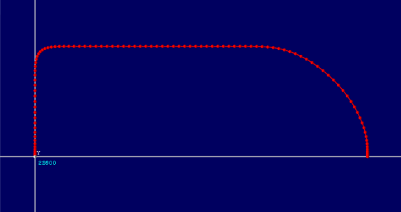

Axis Command
PICKLINK( mode, x, y, z, withdraw, link axis, link distance, overlap control A, overlap control B , u, v, w ,withdraw control, xy control, approach control )
PICKLINK is a move type aimed at making it much simpler to program fast pick and place operations. Associated move type MOVEPICK is a profiled move equivalent to PICKLINK.
PICKLINK is an absolute move to a position in 3..6 axes, linked to a distance on the controlling link axis. The motion includes an incremental “withdraw” amount and special controls for the move speed profile to allow fast pick and place moves.
Multi-axis interpolation uses the UNITS, SPEED, ACCEL and DECEL of the BASE axis.
|
mode: |
Specify the number of axes 0 = xyz, 1 = xyzu, 2 = xyzuv, 3 = xyzuvw |
|
x: |
Target x absolute position |
|
y: |
Target y absolute position |
|
z: |
Target z absolute position |
|
withdraw: |
Incremental withdraw distance from the start position on z axis |
|
link axis |
Axis to link motion profile to |
|
link distance |
link distance on link axis |
|
overlap_control_A: |
0 .. 0.9 Specify rounding on corner A (optional) |
|
overlap_control_B: |
0 .. 0.9 Specify rounding on corner B (optional) |
|
u: |
Target u absolute position |
|
v: |
Target v absolute position |
|
w: |
Target w absolute position |
|
withdraw_control: |
0..1 Adjust the speed for withdraw section (optional) |
|
xy_control: |
0..1 Adjust the speed for xy section (optional) |
|
approach_control: |
0..1 Adjust the speed for approach section (optional) |
overlap control A – 0 to 0.9; larger number for more rounding at first corner (default = 0.5)
overlap control B – 0 to 0.9; larger number for more rounding at second corner (default = 0.5)

Overlap Control A and B above are 0.6, 0.6

Overlap Control A and B above are 0.0, 0.0

Overlap Control A and B above are 0.4, 0.8
Note that the overlap control parameters should always be less than 1.0 Values 0->0.8 are recommended.
The following optional parameters can be used to override the speed in each of the 3 motion sections. A value of 1 produces the specified SPEED value. Lower values generate lower speeds.
withdraw_control – Adjust the speed for withdraw section
xy_control – Adjust the speed for xy section
approach_control – Adjust the speed for approach section
In MOVEPICK the acceleration rate is controlled by the length of the shortest move. Therefore, if one of the moves is substantially smaller than the others it can result in high acceleration rates. The 3 parameters: withdraw_control, xy_control, and approach_control allow a slower speed to be assigned to shorter moves to allow lower acceleration rates.
MOVEPICK does not currently support a lower speed at the end of the approach movement. This will be supported in future versions.